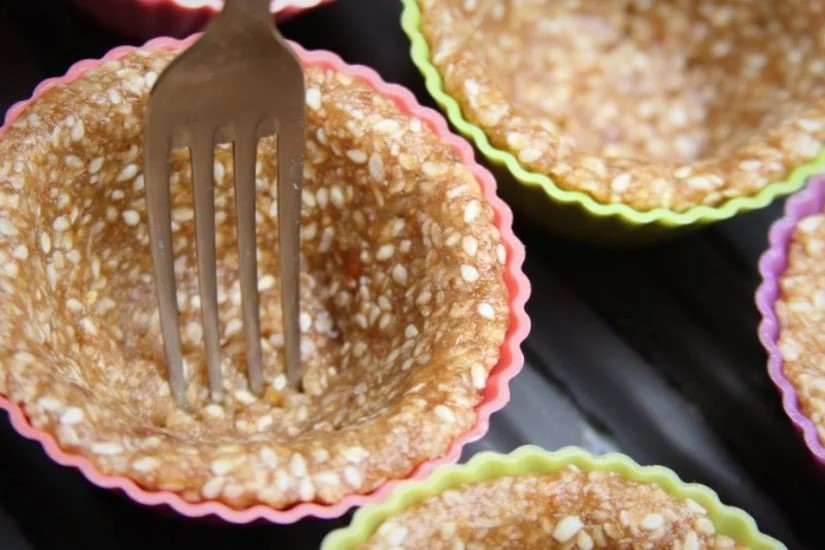

INGREDIENTES CREME DE LIMÃO
1 xícara leite de coco + 1/4 xícara leite de coco para dissolver o amido
1/3 xícara amido de milho
1/3 xícara de mel
2 gemas
Suco de dois limões, aproximadamente 50 ml
1 colher de sobremesa de baunilha (opcional)
INGREDIENTES CASQUINHA CROCANTE (BASE TORTA)
1 xícara de mix de castanhas (usei nozes, amêndoas e castanha de caju)
1 ovo
1/4 xícara de açúcar mascavo
1/4 xícara de gergelim branco, chia ou linhaça
1/2 xícara coco ralado não adoçado
Pitada de sal (opcional)
1 colher de chá de canela ou gengibre em pó (opcional)
INGREDIENTES MERENGUE
2 claras
Pitada de sal
1/2 xícara de açúcar refinado
3 colheres de sopa de água
Esta é uma ótima receita para festas e comemorações, tenho certeza que se você não contar que não contém glúten ou lactose ninguém vai nem perceber. A casquinha é crocante, o recheio cítrico, cremoso e aveludado e o merengue deixa tudo ainda mais delicioso!
MODO DE PREPARO CREME DE LIMÃO
Para que o creme não fique com gosto de ovo passe as duas gemas na peneira e deixe que escorram por completo. Não force com a colher para que passem mais rápido. Você também pode retirar a película com um garfo se tiver mais experiência.
Dissolva o amido de milho em 1/4 xícara de leite de coco, isso evita que forme grumos mal dissolvidos no creme.
Em uma panela adicione o leite de coco, o amido dissolvido no leite de coco, as gemas peneiradas e o mel. Leve para cozinhar em fogo bem baixo mexendo sempre com uma colher de pau ou espátula.
Assim que o mel derreter adicione o suco de limão aos poucos. Experimente com uma colher um pouquinho e ajuste o sabor cítrico conforme a sua preferência.
Você vai cozinhar o creme por aproximadamente 10 minutos, quando ele começar a engrossar preste muita atenção pois será muito rápido para atingir o ponto certo.
Vai começar a aparecer o fundo da panela e quando você passar o dedo na colher vai formar um caminho (ponto napê).
O creme vai ficar grossinho e brilhante, caso você erre o ponto e cozinhe demais ele vai empelotar. Para resolver este problema basta bater o creme no liquidificador que não terá alteração de sabor.
Transfira imediatamente para um recipiente e cubra com plástico filme em contato, isso evita que crie aquela película grossa por cima do creme. Leve para geladeira até esfriar por completo.
MODO DE PREPARO CASQUINHA CROCANTE (BASE TORTA)
Coloque as castanhas no liquidificador bem seco ou use o multiprocessador.
Pulse até que as castanhas se transformem em farinha. Use uma espátula para facilitar o trabalho do liquidificador.
Retire a farinha de castanhas do liquidificador e coloque em uma travessa junto com os demais ingredientes da massa.
Mexa primeiro com uma colher e depois misture com as mãos para incorporar bem os ingredientes da massa.
Preaqueça o forno a 180º C para assar a massa das tortinhas.
Pegue aproximadamente 1 colher de sopa da massa e faça uma bolinha com as mãos untadas com um pouco de óleo vegetal.
Para ser mais fácil de espalhar na forminha achate a bolinha entre as mãos e modele um disco de massa.
Ajuste a massa na forminha de silicone com as mãos fazendo uma camada fina e uniforme.
Tente deixar o mais uniforme possível para que assem por igual no forno.
Para evitar que a massa cresça fure-a com um garfo.

Leve para assar por 15 ou 20 minutos. Elas devem ficar douradas, quanto mais douradas mais crocantes elas ficarão, mas tome cuidado para não queimar.
Assim que você retirar do forno a massa da tortinha ainda vai estar um pouco mole, mas quando esfriar ela endurece e fica crocante. Deixe esfriar por completo antes de retirá-las da forma.
RECHEANDO A TORTA DE LIMÃO
O creme de limão precisa estar completamente frio e a massa das tortinhas também. Tenha paciência 😉
Coloque o recheio com o auxílio de uma colher ou use um bico de confeitar.
MODO DE PREPARO MERENGUE
Em uma batedeira planetária coloque as claras com uma pitada de sal e ligue na velocidade baixa.
Em uma panela pequena adicione o açúcar e a água, MODO DE PREPARO MERENGUEe depois ligue a panela em fogo alto. Não mexa mais depois de ligar para a calda não cristalizar.
Cozinhe a calda até o açúcar dissolver por completo, menos de 5 minutos.
Assim que você perceber que o açúcar dissolveu adicione a calda derramando ao poucos nas claras que já devem estar em neve. Aumente a velocidade da batedeira e bata por alguns minutos.
Se você não tiver batedeira planetária não tem problema. Bata as claras em neve com uma pitada de sal e adicione aos poucos o açúcar.
Coloque o merengue em um saco de confeitar com bico pitanga e confeite as tortinhas fazendo espirais ou use a sua criatividade.
Mantenha refrigerado até a hora de servir.
Você pode substituir o mel por agave ou melado, mas com melado a cor do recheio vai ficar mais escura.
Você pode escolher apenas uma variedade de castanha ou misturá-las como preferir.
Substitua o açúcar mascavo por demerara ou troque por 1/3 xícara de mel, melado ou agave e adicione 1/4 xícara extra de coco ralado não adoçado.
Eu sei que o açúcar refinado nunca é a melhor opção, mas a receita do merengue é uma receita clássica. Se preferir você pode servir sem o merengue ou confira outras sugestões no final do post.
Se você não tiver batedeira planetária não tem problema. Bata as claras em neve com uma pitada de sal e adicione aos poucos o açúcar.
Se não tiver bico de confeitar não tem problema, espalhe o merengue com o auxílio de uma colher.
Esta receita rende 9 tortinhas feitas em forminhas de silicone ou uma torta de 16 cm assada em uma forma com fundo falso ou aro removível. Dobre a receita para uma torta de 25 cm.
Se você fizer as tortinhas nas forminhas de silicone vai sobrar um pouco de creme e um pouco de merengue, misture os dois delicadamente que você vai obter um delicioso musse de limão. Leve para geladeira depois de misturar.
Você pode assar na assadeira que preferir, não precisa ser nas forminhas de silicone, mas é muito mais fácil retirar a massa da forma de silicone pois ela não gruda e assim não quebra a casquinha. Se preferir você pode assar em uma travessa de vidro e servir de colheradas.
Se preferir uma torta musse de limão misture o creme de limão depois de frio com o merengue delicadamente e recheie a torta. Leve para geladeira depois de rechear até a hora de servir.
Para deixar esta receita mais saudável substitua o merengue por frutas frescas picadas. Este creme combina muito bem com frutas vermelhas e você pode decorar usando folhinhas de hortelã fresco.
Se preferir você pode usar a receita de biscoito de coco para a base desta torta.
Se tiver multiprocessador você pode fazer a receita da massa colocando todos os ingredientes para processar juntos.
Use uma panela com fundo fino para cozinhar o creme, quanto mais baixo o fogo e menos quente ficar sua panela, mais fácil é para você acertar o ponto do creme sem empelotar.
A massa da torta fica crocante, mas quanto mais tempo ela ficar com o recheio mais ela vai absorvendo os sabores e a umidade do creme, portanto fica mais macia. Se quiser servir com a casquinha crocante recheie na hora, mas não se preocupe que as duas texturas são maravilhosas!